Február 1.
A „Super Mario” annyira jó játék! Nem is írok többet, megyek megmenteni a hercegnőt!
Egy hely, ahonnan minden diák „megjavulva” távozik. Vagy sehogy.
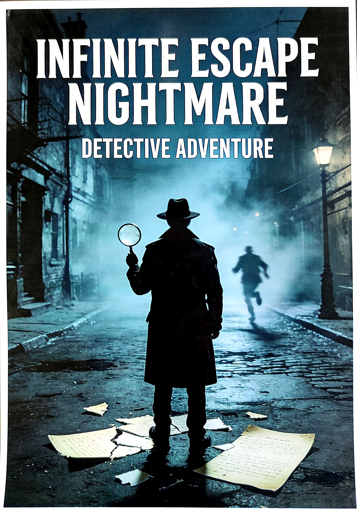
Gannan városának peremén, magas falak mögött áll a hírhedt Gaimi Akadémia — a „problémás gyerekek” javítóintézete. Internetfüggők, szökött szerelmesek, magányos árvák… ide kerül mindenki, akiről a szülei lemondtak. A falakon belülre újságíró nem léphet, a diákokat a szüleik sem látogathatják. Aki innen kikerül, az hallgat.
Te az akadémia egyik szobájában ébredsz. Nem emlékszel a nevedre. Nem emlékszel arra sem, hogyan kerültél ide. Csak dokumentumok, naplók, levelek és fényképek maradtak — belőlük kell összeraknod, ki vagy, mi történik ezen a helyen… és mire készül az igazgató.
„Jó gyermekem… jól viselkedtél ma?”
Olvasd el figyelmesen az akadémia házirendjét, nehogy megszegd — és magánzárkában találd magad!
Válassz egyjátékos vagy kétjátékos módot, és az utasításokat követve tanulmányozd az anyagokat.
Kétjátékos mód: mindkét játékos választ egy akciónaplót, és az utasításokat követve gyűjti a bizonyítékokat, majd közösen következtettek az igazságra.
Egyjátékos mód: egy személy mindkét akciónaplót végigolvassa, elvégzi a bennük leírt feladatokat, bizonyítékot gyűjt, következtet — és felfedi az igazságot.
▸ A FIÚ AKCIÓNAPLÓJA: a füzet 1–4. oldala.
▸ A LÁNY AKCIÓNAPLÓJA: a füzet 5–8. oldala.
A játékban szereplő minden intézmény, szervezet, személy és esemény kitalált, a valósághoz semmi köze. A karakterek mesterséges intelligencia segítségével készültek.
A füzet 1–4. oldala · Egy férfi növendék feljegyzései
„Öld meg őket… öld meg őket… és király leszel…”
Ezek a szavak visszhangoznak a füledben, és nem akarnak elhallgatni. A sötétségben egy lezárt szobában találod magad, a falakat vérfoltok borítják. Az asztal felé indulsz, de a lábad alig mozdul — mintha ólomból lenne.
Kimerülten éred el az asztalt. Egy furcsa sisak hever rajta, némán. Nem tudsz ellenállni: a fejedre húzod — és abban a pillanatban szörnyek hordája ront rád, agyarakat és karmokat villantva. Csapkodsz feléjük, de hiába.
„Kegyelem! Kegyelem!” — könyörögsz térdre rogyva, de a démonok nem hátrálnak. Szélesre tárják karjukat, mintha el akarnának nyelni.
„Add vissza az életem… add vissza az életem…”
„Ébresztő! Ébresztő!” — hangzavar ránt ki a rémálomból. Magadra nézel: régimódi kék köntöst viselsz, akár egy régi korok tudósa. Odakint hangszóró recseg — egy férfihang. A hang hallatán félelem hasít beléd, és önkéntelenül is hegyezni kezded a füled.
A hangosbemondó után gépiesen engedelmeskedsz, és az asztalra pillantasz. Ott hever a „Gaimi Akadémia házirendje”, a Gannan Napilap egy példánya, néhány fénykép, valamint egy füzet, a gerincén felirattal: „Wen Zhibin naplója”. Erőlködsz, hogy visszaemlékezz bármire — de rá kell jönnöd: a saját nevedre sem emlékszel. Úgy döntesz, Wen Zhibin szemszögéből kezdesz emlékezni, és megpróbálsz minél többet felidézni.
Az akadémia fotóit és hirdetményeit követve megérkezel a tanári szobához, hogy regisztrálj. Az emeleten három tanári iroda van, látszólag teljesen egyforma elrendezéssel — csak a bennük lévő tárgyak térnek el kissé. Tudod, hogy a szobák Liu Zi tanáré, Li Yi tanáré és Gui („Szellem”) tanáré. Mivel nem emlékszel, melyik osztályba jársz, magad választasz szobát a regisztrációhoz.
【Választás】
Korábbi emlékeid alapján válaszd annak a tanárnak a szobáját, akihez megérzésed szerint a legmélyebb kötelék fűz. Lépj be, vizsgálódj, és próbáld feltérképezni a szereplők közötti kapcsolatokat!
Liu tanár szobája. Belépsz, és ismerős érzés önt el. Körülnézel, mindent alaposan szemügyre veszel. A falon a „szülőtisztelet” írásjegye függ; az asztalon egy kicsi, vérfoltos fafigura — kísértetiesen hasonlít az álmodban látotthoz. Egy címke nélküli orvosságosüveget is találsz: kinyitod, beleszagolsz — az émelyítő szag mintha a lelkedet szippantaná ki. Emellett diákok házi feladatai hevernek az asztalon: a „Huszonnégy példamutató gyermek” történeteit másolják bennük újra meg újra. Nem nagyon érted őket, ezért leülsz, és várod, hogy jelentkezhess. Kisvártatva megjelenik Zhang igazgató. Amikor meglát, felsóhajt. A kezedbe nyomja az asztalon álló orvosságot, és megparancsolja, hogy idd meg. Csak engedelmeskedni tudsz. Az orvosság hatására fokozatosan elveszíted az eszméletedet, és mély álomba zuhansz…
Li Yi professzor szobája. Belépsz — a hely egyszerre idegen és furcsán ismerős. Hatalmas könyvespolc áll a falnál, tele kalandregényekkel. Az asztalon címke nélküli orvosságosüveg: kinyitod, beleszagolsz — az émelyítő szag szinte kiszippantja a lelked. Az asztalon heverő óravázlatokba pillantasz: részletesen taglalják, „hogyan szerezzünk információt hallgatózással”. Észreveszel egy tanítási naplót is; belelapozol, de szinte érthetetlen. Leülsz, és várod, hogy sorra kerülj. Hamarosan megjelenik Zhang igazgató. Rád néz, felsóhajt, a kezedbe nyomja az orvosságot — nincs választásod. A szer lassan elkábít, és mély álomba zuhansz.
A Szellemtanár szobája. Belépsz, és ismerős érzés önti el az elméd. Körülnézel, mindent alaposan szemügyre veszel. A falakat vérfoltok borítják — hátborzongató látvány. Az asztalon itt is címke nélküli orvosságosüveg; az émelyítő szag majdnem elszédít. Az asztalon rengeteg levél — úgy döntesz, ezekben kutatsz az emlékeid után. Úgy érzed, ehhez a tanárhoz fűz a legmélyebb kötelék, és tovább akarsz nyomozni.
A levelekben úgynevezett „teknőslevesek” rejtőznek. Ez egy kérdezz-felelek következtetős játék: a mesélő elmond egy furcsa, hiányos történetet, a játékos pedig eldöntendő kérdéseket tesz fel, amelyekre csak „igen” vagy „nem” lehet a válasz. A válaszok alapján nyomokat gyűjt, módosítja a feltevéseit, és újabb kérdésekkel végül megfejti a történet titkát.
Emlék. A tanári szoba iratainak átnézése után emlékek árasztják el az elméd: Félénk ember voltál, de a szerelemhez való jogodat sosem adtad fel. Bár a szüleid úgy döntöttek, hogy őt a bátyádhoz adják feleségül, ti ketten tudtátok: igazán szeretitek egymást. Az esküvő előtti éjszakán az utolsó közös, boldog pillanataitokat töltöttétek a szobában. Hirtelen csobbanást hallottál. Felnéztél — és láttad, ahogy az öcséd a kútba löki a bátyádat. Aztán megfordult… és meglátott téged, aki mindent végignézett. A bátyád halála miatt őt — a szerelmedet — a szüleid elzavarták otthonról. Azon az éjszakán az öcséd elmesélte neked a „három fivér” történetét. Majd elővett egy döglött csirkét, és a vérét szétkente az ágyon, rajtad, a szoba minden zugában — hogy úgy tűnjön, te ölted meg őt. Aztán elmenekült…
Vér… ez vér! A gondolatba újra belehasít a fejfájás. Újabb emlékfoszlányok törnek fel a közelmúltból: a kút… a kút… Amikor az az elmosódott alak megtudta, hogy ő maga volt a gyilkos, felüvöltött: „Megöltem azokat, akik életet adtak nekem és felneveltek!” — és a kútba vetette magát… Lassan megnyugszol, és ráébredsz: ez az emlék szorosan összefügg a korábban látott „teknőslevesekkel”. De ennyi információból még kevésre jutsz. Úgy döntesz, az igazgatói irodában nyomozol tovább.
Rettenetes igazságokat tudtál meg. Nem maradhatsz tovább az akadémián: azonnal menekülnöd kell! Az igazgatói iroda szemeteskosarában papírfecniket veszel észre. Egy gyors pillantás után rájössz: az akadémia térképe az! Mivel nem ismered az épület elrendezését, az igazgatói iroda rejtvényével keresel menekülőutat.
Fejtsd meg az alaprajz-rejtvényt, és találd meg a helyes menekülési pontot! (Az eredeti játékban itt egy QR-kódot kell beolvasni — itt egyszerűen írd be a helyet. A menekülési pont az emlékeidben van…)
A füzet 5–8. oldala · Egy női növendék feljegyzései
„A férfi felsőbbrendű a nőnél… a három engedelmesség és a négy erény… A szülőtiszteletlen tettek közül a legsúlyosabb, ha valakinek nincs utódja…”
Ezek a szavak kavarognak a füledben, és nem akarnak elhallgatni. A sötétségben megpillantasz egy asztalt, és megpróbálod megközelíteni, de alig bírsz mozdulni. Kimerülten éred el végül — és egy kicsi, vérfoltos fafigurát látsz rajta. A szemei élettelenek, a szeme sarkában vér és könny gyűlik. Néma csend. A kis fafigura üres tekintettel mered rád, és elsöprő félelem fog el iránta.
„Faragj fát, szolgáld szüleid… faragj fát, szolgáld szüleid…” — mordul fel mélyen, újra és újra ismételve e szavakat.
„Kegyelem, kegyelem!” — könyörögsz térden állva. De a fafigura megmozdul: fokozatosan megduzzad, és egyre közelebb húzódik hozzád. Hirtelen felnevet: „Várni foglak Weifeng faluban…”
„Ébresztő! Ébresztő!” — hangzavar ránt ki a rémálomból. Magadra nézel: régimódi kék köntöst viselsz, akár egy régi korok tudósa. Odakint hangszóró recseg — egy férfihang. A hang hallatán félelem hasít beléd, és önkéntelenül is feszülten hallgatod a bemondást.
A bemondás után gépiesen engedelmeskedsz, és az asztalra pillantasz. Ott hever a „Gaimi Akadémia házirendje”, a Gannan Napilap egy példánya, néhány fénykép — és egy boríték, rajta felirat: „Wang Miaoling titka”. Erőlködsz, hogy emlékezz, de a saját nevedre sem emlékszel. Úgy döntesz, Wang Miaoling szemszögéből próbálsz emlékezni, és minél többet felidézni.
Az akadémia fotóit és hirdetményeit követve megérkezel a tanári szobához, hogy regisztrálj. Az emeleten három, látszólag egyforma tanári iroda van — Liu Zi, Li Yi és Gui („Szellem”) tanár szobái. Mivel nem emlékszel, melyik osztályba jársz, magad választasz szobát.
【Választás】
Korábbi emlékeid alapján válaszd annak a tanárnak a szobáját, akihez megérzésed szerint a legmélyebb kötelék fűz — lépj be, és nyomozz!
Liu tanár szobája. Belépsz, és ismerős érzés önt el. A falon a „szülőtisztelet” írásjegye; az asztalon kicsi, vérfoltos fafigura — kísértetiesen hasonlít az álmodbelihez. A címke nélküli orvosság émelyítő szaga szinte kiszippantja a lelked. A diákok beadott házi feladatai között megtalálod Wang Miaoling munkáját: újra és újra a „fát faragott, hogy szüleit szolgálja” történetét másolja a „Huszonnégy példamutató gyermek” gyűjteményből. Úgy érzed, ehhez a tanárhoz fűz a legmélyebb kötelék, és tovább vizsgálódsz. Kihúzol egy fiókot — és megtalálod az akadémia személyi aktáit. Úgy döntesz, ezeken keresztül próbálod visszanyerni az emlékeidet.
Li Yi professzor szobája. Kissé idegen, mégis furcsán ismerős. Hatalmas könyvespolc, tele kalandregényekkel; címke nélküli orvosság émelyítő szaggal; óravázlatok arról, „hogyan szerezzünk információt hallgatózással”. Észreveszel egy tanítási naplót, és belelapozol — de rendkívül nehéz megérteni. Leülsz várakozni; Zhang igazgató megjelenik, felsóhajt, a kezedbe nyomja az orvosságot — engedelmeskedsz, és mély álomba zuhansz…
A Szellemtanár szobája. Idegen, mégis kísértetiesen ismerős. A falakat vérfoltok borítják — iszonyú látvány. Az asztalon címke nélküli orvosság és rengeteg levél. Kinyitsz egyet: „teknősleves”-feljegyzések vannak benne. Értetlenül leülsz várakozni. Hamarosan megjelenik Zhang igazgató, felsóhajt, a kezedbe nyomja az orvosságot — nincs választásod. Elveszíted az eszméleted…
Emlék. A tanári szoba iratainak átnézése után emlékek árasztják el az elméd: Te és egy elmosódott alak kéz a kézben ültök az ágy szélén. Valamiért — bár annyira ellenszenves tudsz lenni — mégis szóra bírtad őt, és olyan ismerősnek érezted, mintha előző életed szerelme lenne. Egy kicsi fababát nyomott a kezedbe, nevetett a bolondozásodon, és megfogadtátok: együtt mentek a világ végére is. De az akadémia tiltotta a kapcsolatotokat; egyikőtök sem távozhatott. A kapcsolatra Zhang igazgató fényt derített: téged szigorúan megróttak, őt viszont elvitték „meditációs elvonulásra”. A közelben egy csecsemő sírását hallottad… mi történt itt? Amikor újra láttad őt, már késő volt: a kútba vetette magát, és a vére a tanépület sarkát áztatta… Vér. Vér! A gondolatra ismét lüktetni kezd a fejed. Zhang igazgató tette! Ő tette tönkre a szerelmedet! Elhatározod: az igazgatói irodába mész — tilos, de bosszút akarsz állni a szerelmedért.
Rettenetes igazságokat tudtál meg. Nem maradhatsz tovább az akadémián: azonnal menekülnöd kell! Az igazgatói iroda szemeteskosarában papírfecniket veszel észre — az akadémia térképe! Az igazgatói iroda rejtvényével keresel menekülőutat.
Fejtsd meg az alaprajz-rejtvényt, és találd meg a helyes menekülési pontot! (A menekülési pont az emlékeidben van… Hallgasd csak — mintha sírást hallanál valahonnan.)
Az akadémián talált dokumentumok — magyarra fordítva. A kis képekre kattintva megnézheted az eredetit.
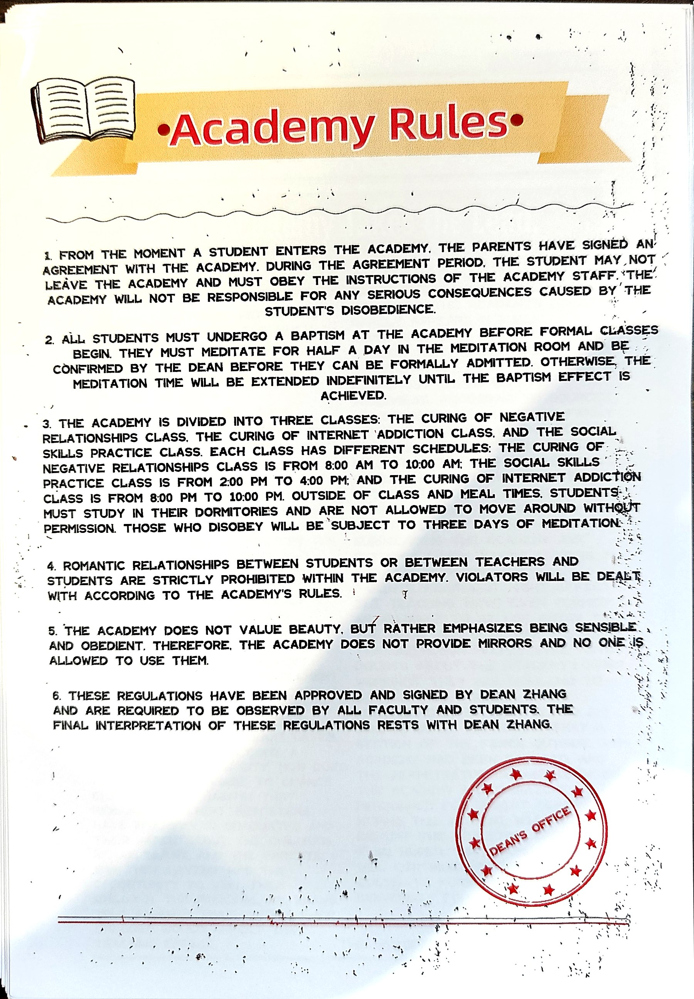
Tudósítóink ma a sokat emlegetett Gaimi Akadémiánál jártak. Az intézmény 2010-es alapítása óta valóságos legendának számít Dél-Jiangxi tartományban.
Ez a jellegtelen külsejű akadémia kizárólag „problémás gyerekeket” fogad, és a beiratkozás előtt aláírandó felelősségkizáró nyilatkozatok és titoktartási megállapodások rejtélyes homályba burkolják. Úgy tartják, minden itt végzett diák képes leküzdeni „rossz szokásait” — az internetfüggőséget, a korai szerelmi kapcsolatokat —, és feltűnően jólneveltté válik. A szülők tódulnak ide, és a magas tandíj sem vetette vissza a jelentkezők számának megugrását. A Gaimi Akadémia így vált híressé, egyúttal fellendítve Gannan város gazdaságát is. Tizenegy évvel az alapítás után az akadémia a város egyik jelképe lett. Hogyan éri el, hogy a gyerekek levetkőzzék rossz szokásaikat? Ez máig rejtély. Tudósítóink végzett diákokat és szüleiket is megkeresték — ám a gyerekek hallgatnak, a szülők pedig elmondták: soha nem volt alkalmuk meglátogatni gyermeküket. Az igazgató, Zhang úr azt közölte a szülőkkel, hogy a látogatás rontaná a nevelés hatásfokát.
Zhang úr, az akadémia igazgatója ritkán mutatkozik nyilvánosan. Tudósítóink csupán annyit tudtak meg, hogy eredeti neve Liu Yongbo, körülbelül ötvenéves, és szinte soha nem ad interjút. Értesüléseink szerint Zhang úr a családtagjait is az akadémián dolgoztatja: a menza dolgozója, Chen Qin a felesége. Tudósítóink megpróbáltak bejutni az akadémiára, de a kapunál Shi Jian biztonsági őr feltartóztatta és szigorúan rendreutasította őket. Az akadémiát övező falak rendkívül magasak, átmászni rajtuk szinte lehetetlen. A szülők — attól tartva, hogy az zavarná az oktatást — szövetségbe tömörülve tagadják meg a belépést a sajtótól, sőt egyes szülőktől is. Az idő múlásával az emberekben ugyan megmaradtak a kételyek az akadémia belső működésével kapcsolatban, mégsem kívánják megzavarni ezt a nyugodt szigetet.
Shi Jian biztonsági őr arról is tájékoztatta lapunkat, hogy az akadémia külső kerítésének egy szakasza megrongálódott; a tettes ismeretlen. Az akadémia embereket küldött a sürgős javításra, remélve, hogy az eset nem zavarja meg az intézmény rendjét. Bízunk benne, hogy a Gaimi Akadémia továbbra is virágzik, és még több tehetséges embert nevel a társadalomnak!
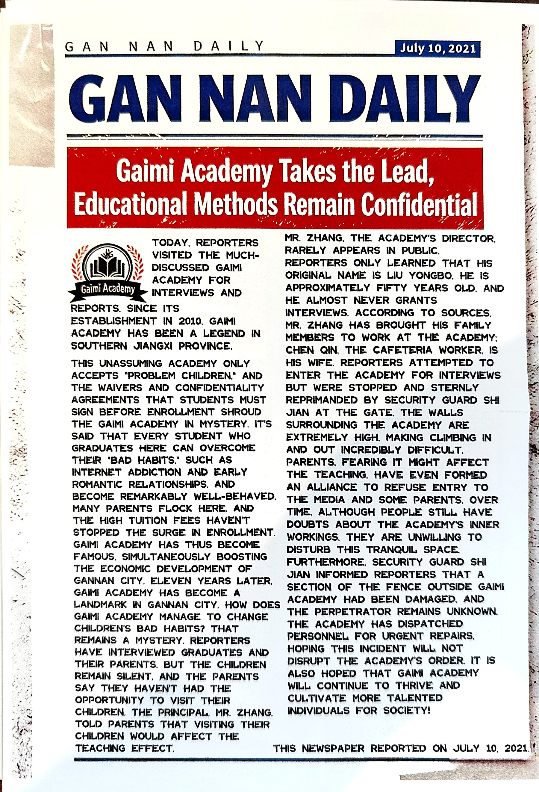
A fényképkollázson az akadémia helyszínei láthatók:
A három tanári szoba kísértetiesen egyforma… Miért tart az igazgató családi fotót az asztalán? És tényleg: mi az, ami az egész akadémiából hiányzik?
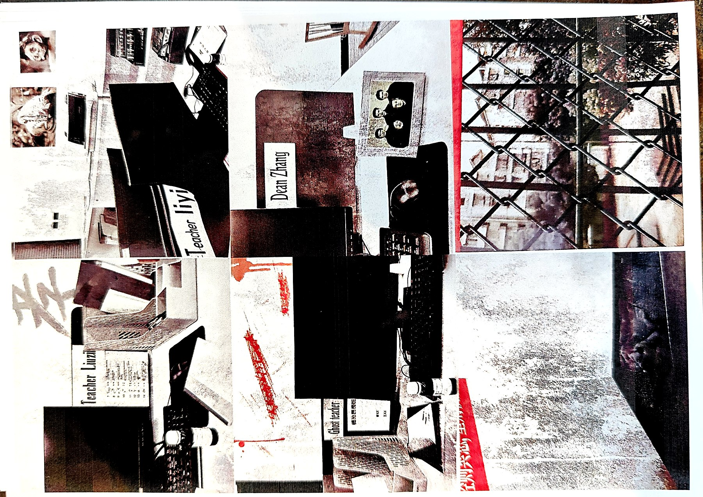
A „Super Mario” annyira jó játék! Nem is írok többet, megyek megmenteni a hercegnőt!
Amíg a szüleim nem voltak itthon, egész nap a „Moshou világában” játszottam — olyan jó volt, hogy mindenkit lekaszabolok!!!
Anya ma azt mondta, vörösre festette a haját. De a rövidlátásom mintha megint romlott volna — csak egy elmosódott árnyat látok belőle.
Apa hazajött. Minden nap a kórházi munkájával van elfoglalva, és amikor végre hazaér, engem ver. Na és, ha játszom egy kicsit???
Anya folyton mellettem sír. Valami akadémiát emlegetett apával — hová akarnak engem küldeni?! Idegesítő! Én csak játszani szeretek, miért hívtok „netfüggőnek”?!!
Napok óta az akadémián járok órákra. Ez a hely tényleg jó, és a tanárom folyton dicsér — tetszik itt. Ma nagyon boldog vagyok! Az igazgató megengedte, hogy VR-játékkal játsszak. A játékban minden olyan élethű! Leszúrtam a késemmel a vörös hajú szörnyet, nagyon menő volt. Tényleg szeretem ezt az akadémiát!
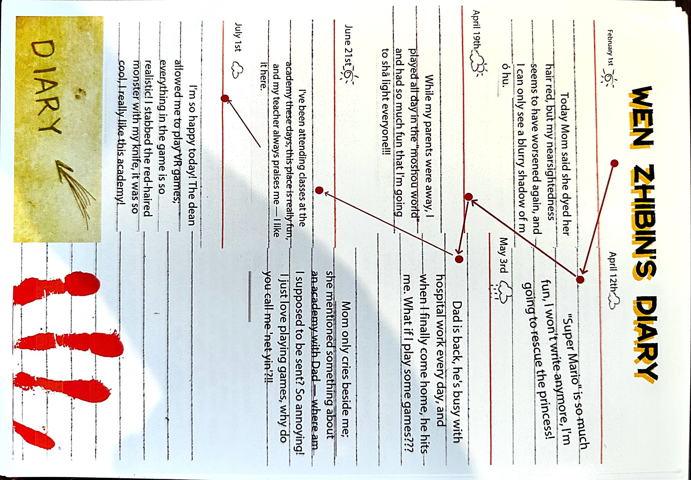
Kedves Liu úr!
Üdvözlöm! Ez az első levelem Önhöz. A történet, amelyet ma mesélek, a „három fivérről” szól.
A történet nagyjából így hangzik: Volt egyszer három fivér, akik együtt nőttek fel gyerekkoruk óta, és olyan jó volt a viszonyuk, hogy egy ágyban aludtak. Egy nap a legidősebb fivér balesetben meghalt. A középső fivér ezután sokáig álmatlanságban szenvedett — ám néhány nap múlva szokatlanul mélyen kezdett aludni.
A történet itt véget ér. Kitalálja, miért?
A választ a hátoldalra írtam; ha tényleg nem jön rá, megnézheti — hehe.
Kedves Liu úr!
Rég találkoztunk! Ez a negyedik levelem Önhöz. A történet, amelyet ma mesélnék, az „apáról és fiáról” szól.
A történet nagyjából így hangzik: A híres férfisztárnak volt egy fia, akire kiskorától kezdve időnként föltett egy kalapot. Egy nap kórházba vitte a fiát — és a gyermek meghalt.
A történet itt véget ér. Kitalálja, miért?
A választ a hátoldalra írtam; ha tényleg nem jön rá, nyugodtan nézze meg — hehe.
Kedves Liu úr!
Rég találkoztunk! Ez a tizedik levelem Önhöz. Ma a „születésnapról” szeretnék mesélni.
A történet nagyjából így hangzik: Egy apa egy nappal a születésnapja előtt halt meg. A fia nagyon szomorú volt. Az apa azután halt meg, hogy kitakarította a fia szobáját — és békésen távozott…?
A történet itt véget ér. Kitalálja, miért?
Hehe — nem túl könnyű így, hogy mindig egyszerűen elárulom a választ? Ezúttal azt szeretném, ha saját maga gondolkodna el rajta. De ha már idáig eljutott, adok néhány támpontot: ez a történet valamivel kapcsolatos, ami mostanában a városunkban terjed — és hiszem, hogy ihletet ad majd Önnek. A következő találkozásig!
És még valami: ha helyesen fejti meg a választ, olyan titkokat árulok el, amelyeket rajtam kívül senki sem ismer. Kérem, hívja a telefonszámomat: 177****6808
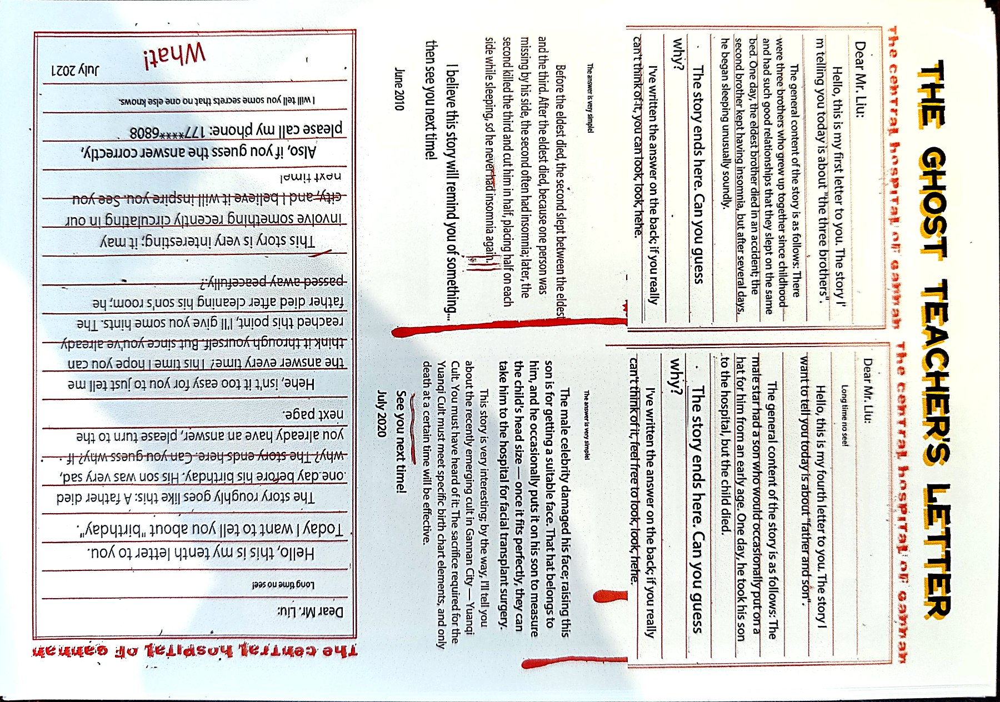
Ma van a Gaimi Akadémia alapításának napja. Az igazgató megkért, hogy vezessek naplót, és jegyezzem fel a dátumokat. Mostanában kábulatban élek: teljesen elfelejtem a korábbi dolgokat, és képtelen vagyok bármit felidézni. Az igazgató megkért, hogy maradjak, és legyek tanár — nagyon hálás vagyok neki, bármit is mondott… Ó, és minden nap időben beveszem az orvosságot, amit az igazgató készít nekem.
Ezeknek a diákoknak fogalmuk sincs a hagyományos erényekről! Ezért hangosan felolvastattam velük a tankönyvet, és minden napra rengeteg házi feladatot adtam. Egész engedelmesek lettek. Hiszem, hogy néhány hónap múlva sikeresen végeznek.
Ezek a diákok… hát nem félelmetesek…? Nagyon régóta nem beszéltem ennyi emberrel. De az igazgató bátorított, hogy legyek bátor, és megtanította, mit tegyek. Először sikerült! Ez jó kezdet!
Általában semmire sem vagyok jó, de szerencsére mostanában rengeteg névtelen levelet kapok, és el tudom mesélni a diákjaimnak, mi áll bennük! Haha, még fizetést is kapok érte — igazán kényelmes!
Van egy Wu nevű lány az osztályomban, aki hihetetlenül tehetséges — akárcsak én: kiválóan tud hallgatózni. Az igazgató nagyon kedveli, gyakran küldi „küldetésekre”. Még engem is megdicsért, hogy jól tanítom! Ez a Wu úgy néz ki, mint… csak nem az előző életbeli szerelmem? De hiszen olyan fiatal… Jaj, ne, megint fáj a fejem. Be kell vennem az orvosságot.
Mostanában valamiért mindig furcsa cetlik hevernek az asztalomon, amikor visszatérek az irodámba. Ilyenek: „Weifeng falu”, meg „Holdisten-templom”… Gondolom, valamelyik diák tréfál. Egyszerűen kidobom őket!
Nem lett volna szabad belemennem annak a lánynak a kérésébe… Úgy tűnik, az igazgató nagyon szigorúan megbüntette. De nem szólalhatok fel érte — elveszíteném az állásomat! Nem csinálhatok többé ilyen ostobaságot!
Új diák érkezett az osztályunkba, Wen Zhibin a neve. A Wen vezetéknév elég ritka… egy régi barátomra emlékeztet… Wen… nem, nem! Fáj a fejem, be kell vennem az orvosságot! …Miért nem jött ma válasz a levélre?! Ez megőrjít! Mostanában a diákok folyton nyaggatnak, hogy meséljek nekik történeteket — olyan zajosak! Mikor jön már a következő levél?!
Egy tanár, aki semmire sem emlékszik… akinek az asztalán landolnak a Liu Zinek szánt szerelmes cetlik… és aki a Szellemtanárnak címzett levelekre vár. Hm.
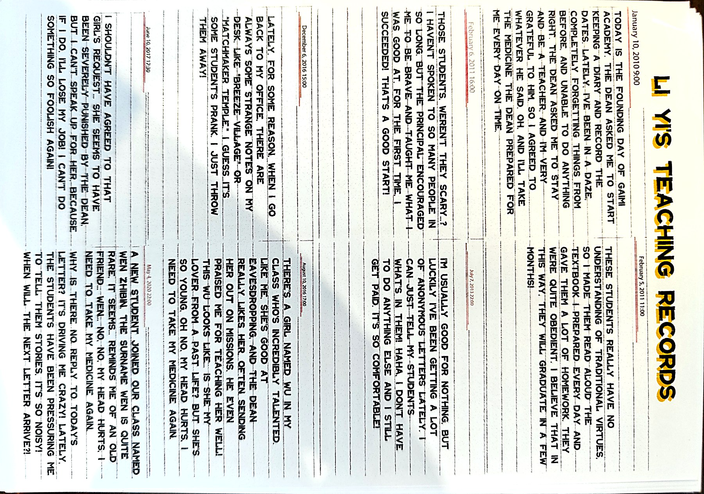
A közelmúltban egy szekta híre terjedt el Gannan városában. Bennfentesek szerint ez a „Yuanqi-kultusz” nevű szekta azt állítja, hogy képes „halhatatlanságot” adni az embereknek. A gyakorlónak meghatározott születési dátumú és időpontú rokonokat kell összegyűjtenie, a születésnapjukon megölnie őket, majd egy rituális elrendezéssel befejeznie a szertartást. A kultusz több tagja gyilkosságot követett el, és jelenleg is szökésben van. A rendőrség nyomozást indított. Kérünk mindenkit, aki információval rendelkezik, tegyen bejelentést, nehogy e bűnözők elkerüljék az igazságszolgáltatást és veszélyeztessék a társadalmi stabilitást!
A közelmúltban több polgár jelezte, hogy városunkban egyes üzletemberek titokban béranyasági ügyleteket bonyolítanak. Bár a béranyaság valóban megoldást jelenthet egyes gyermekre vágyó, terméketlenséggel küzdő családoknak, a kínai törvények szigorúan tiltják, és súlyos etikai kérdéseket vet fel. Kérjük a lakosságot, hogy ne kísérletezzen ilyen illegális tevékenységgel! Városunk orvosai emlékezzenek szent esküjükre, és maradjanak hűek eredeti hivatásukhoz. A lakosok ismerjék a törvényt: a béranyaság illegális — aktívan jelentsenek minden ilyen tevékenységet!
„A Gondtalan Árvaház az otthonom, nagyon boldog vagyok itt!” — vallja az árvaház egyik lakója. Ma ünnepli alapításának 20. évfordulóját a Wuyou („Gondtalan”) Árvaház, amely két évtizede rendíthetetlenül óvja a város utolsó békés menedékét, szünet nélkül gondoskodva az árvákról. Az árvaház nemcsak közjóléti intézmény, hanem sok család áldása is: számos gyermekvállalási nehézséggel küzdő család választja, hogy innen fogad örökbe gyermeket. Húsz év kemény munka — virágozzék tovább a Gondtalan Árvaház!
Július 2-án Liu úr bejelentette, hogy felesége, Wen Ting eltűnt. Szemtanúk állítása szerint Wen Tinget utoljára július 1-jén, a Gaimi Akadémia közelében látták. Wen Ting szomszédai azt is elmondták a rendőrségnek: az asszony az eltűnése napján úgy nyilatkozott, a Gaimi Akadémiára megy meglátogatni a fiát. A rendőrség átkutatta az akadémiát, de semmit sem talált. Liu úr elmondta lapunknak, hogy Wen Ting eltűnésének napja egyben megismerkedésük 11. évfordulója volt. Wen Ting legjellegzetesebb ismertetőjegye vörösre festett haja. Aki látta Wen Tinget, haladéktalanul értesítse dr. Liut a Gannan Városi Kórházban!
Kapcsolat: dr. Liu, Gannan Városi Kórház — Tel.: 177****6808
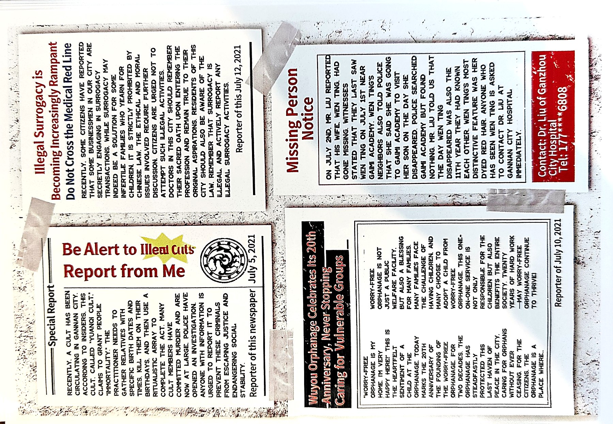
| Név | (elmosódott / olvashatatlan) |
| Nem | nő |
| Beiratkozás | 2016. szeptember |
| Születésnap | szeptember 8. |
| Osztály | Végzetes kapcsolatok gyógyítása |
| Felvétel oka | Korai szerelmi kapcsolat; a szülők próbálták megfékezni, sikertelenül. Titokban, a szülei tudta nélkül meg akart szökni. |
| Lakcím | Weifeng falu, Shiji köz 220. |
| Hobbi | — |
| Szülő aláírása | Wang Fugui |
| Név | Wen Zhibin |
| Nem | férfi |
| Beiratkozás | 2020. május |
| Születésnap | október 5. |
| Osztály | Internetfüggőség gyógyítása |
| Felvétel oka | „Annyira függök az internettől, hogy nem tudom megkülönböztetni a virtuálist a valóságtól…” |
| Lakcím | Lushui város, Yongxing utca 66. |
| Hobbi | rajzolás, videójátékok |
| Szülő aláírása | Wen Ting |
| Név | Liu Jiaming |
| Nem | (nem kitöltött) |
| Beiratkozás | (nem kitöltött) |
| Születésnap | július 15. |
| Osztály | (nem kitöltött) |
| Felvétel oka | SZIGORÚAN VÉDETT |
| Lakcím | SZIGORÚAN VÉDETT |
| Hobbi | (nem kitöltött) |
| Szülő aláírása | (üres) |
| Név | Wu Shuan |
| Nem | nő |
| Beiratkozás | 2015. július |
| Születésnap | március 4. |
| Osztály | Társas készségek gyakorlása |
| Felvétel oka | (hiányos — az árvaházból küldték át „átnevelésre”) |
| Lakcím | Wuyou („Gondtalan”) Árvaház |
| Hobbi | — |
| Szülő aláírása | Wang Wenting |
Furcsa… Wen Zhibin aktáját „Wen Ting”, Wu Shuanét „Wang Wenting” írta alá. Két külön ember volna? És három „Eltűnt” pecsét…
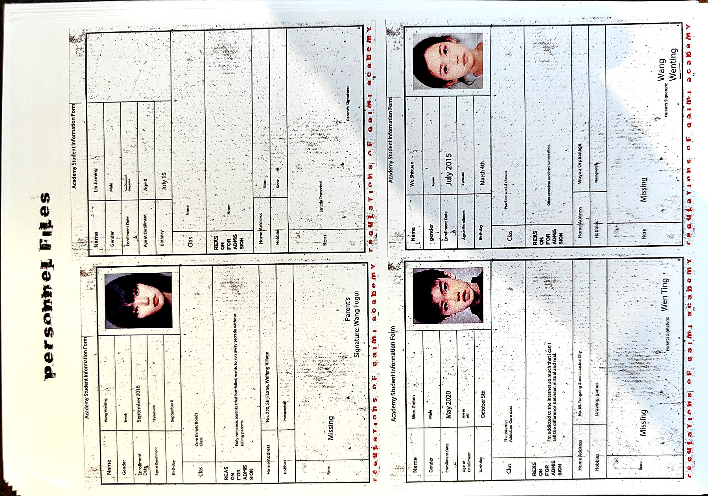
| Név | Chen Qin |
| Nem | nő |
| Alkalmazás kezdete | 2010. január |
| Életkor belépéskor | 49 év |
| Születésnap | május 10. |
| Egészségi állapot | Jó |
| Családi állapot | házas |
| Házastárs neve | Liu Yongbo |
| Lakcím | Zouyu falu, Leiting köz 30. |
| Beosztás | menzavezető |
| Aláírás | Chen Qin |
| Név | Liu Yu |
| Nem | férfi |
| Alkalmazás kezdete | 2010. január |
| Életkor belépéskor | 29 év |
| Születésnap | június 6. |
| Egészségi állapot | Gyenge |
| Családi állapot | nőtlen |
| Házastárs neve | nincs |
| Lakcím | Zouyu falu, Leiting köz 30. |
| Beosztás | tanár |
| Aláírás | Liu Yu |
Az akadémia teljes tanári kara az akták szerint: egyetlen ember. Liu Yu. Aki ugyanazon a címen lakik, mint az igazgató felesége… És hol van akkor Liu Zi, Li Yi és a Szellemtanár adatlapja?
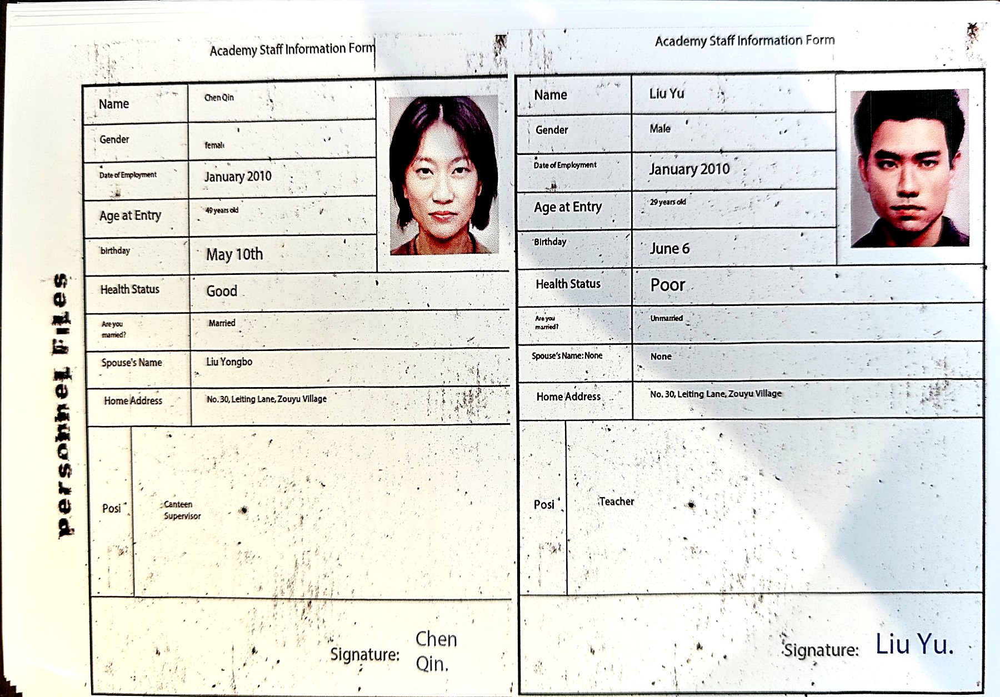
Három nap múlva… ki tölti be a hármat? És hol van „bőven víz” az akadémián?
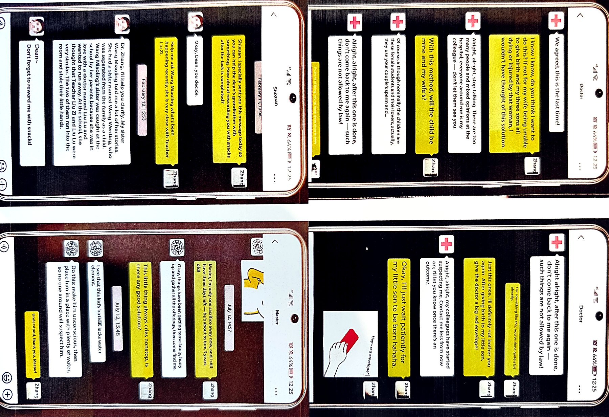
A mese — „Rokonom, akit fából faragtak”:
Ding Lan gyermekként elvesztette a szüleit, és nem tudta viszonozni gondoskodásukat. Hálája jeléül fából faragta ki szerettei képmását, és úgy bánt a szobrokkal, mintha élnének. Felesége, aki régóta tiszteletlenül bánt a szobrokkal, egy nap tűvel megszúrta a faszobor ujját — és abból vér serkent. Amikor a fafigura meglátta az asszonyt, könnyek gördültek le a szeméből. Ding Lan pedig elhagyta a feleségét, mert a szobor elárulta neki, mit érez.
A cetli:
„Nem emlékszel? Weifeng falu Holdisten-templomában fogadtuk meg, hogy egy életre együtt maradunk…”
A fénykép: két alak egy templom előtt — az egyikük Wang Miaoling. (Az eredetit lásd lent.)
Ultrahangvizsgálati lap — Gannan Népi Kórház
| Név | Wang Miaoling |
| Nem / életkor | nő, 19 éves |
| Vizsgálat helye | méh (nőgyógyászat, első vizsgálat) |
| Lelet | A méhüregben terhességi zsákocska látható (kb. 10×11 mm), szikhólyag és embrió azonosítható, primitív szívcső-pulzáció megfigyelhető. |
| Diagnózis | Korai terhesség, kb. 3 hetes. |
| Vizsgálat dátuma | 2017. november 22. |
| Vizsgáló orvos | Chen ___ (az aláírás elmosódott) |
Kinek szólhatott a cetli? Miért pont egy olyan mesét őrzött Wang Miaoling, amelyben egy élettelen képmás valódi érzéseket árul el? És ki a gyermek apja…?
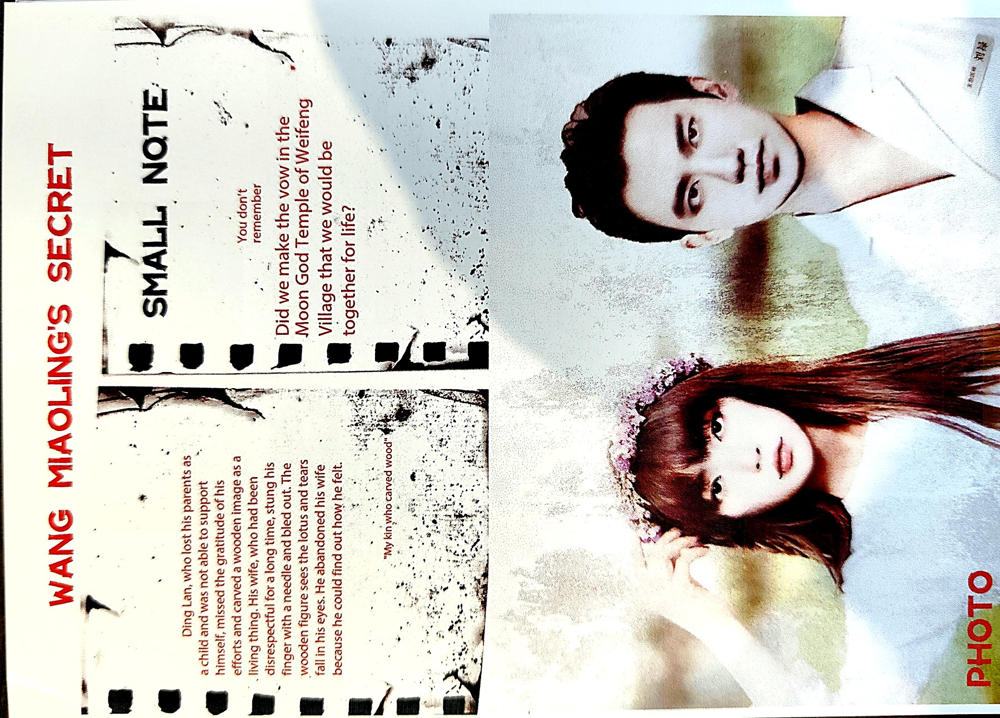
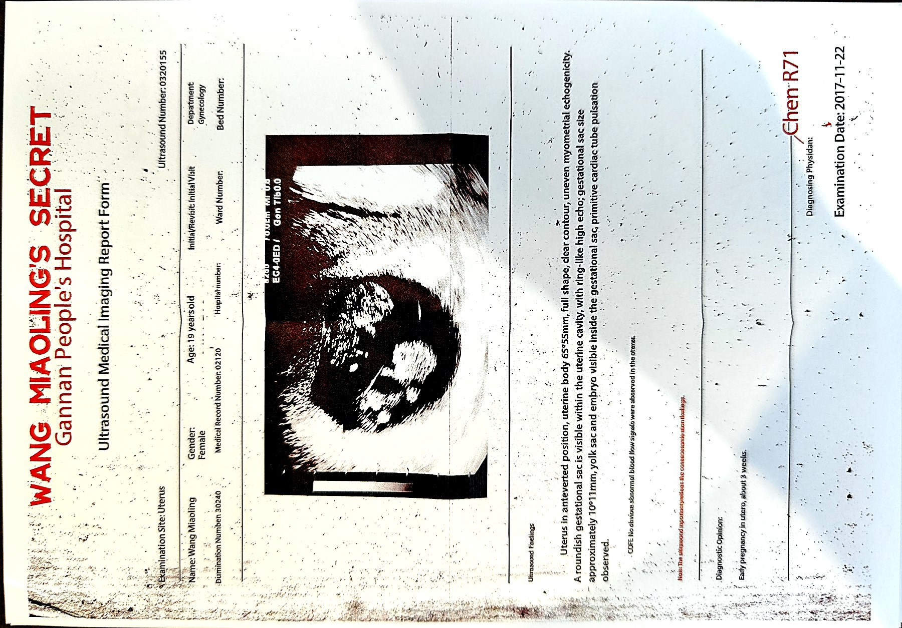
Az alaprajzon azonosítható helyek:
Ezen az oldalon a QR-kód helyett a naplófejezetek végén lévő „Menekülési pont” mezőbe írhatod be a megfejtést. A rajz részleteit az eredeti szkennen böngészheted — ki lakik a kút közelében? Honnan hallatszik a sírás?
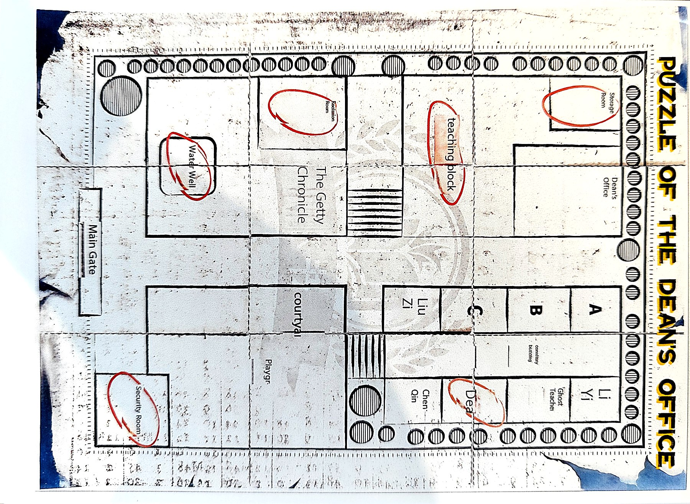
A játék mind a 25 eredeti oldala — feljavítva, élesítve. Kattints bármelyik képre a nagyításhoz!
Az alábbi két oldal a teljes megoldást tartalmazza — csak a játék végén nyisd ki!
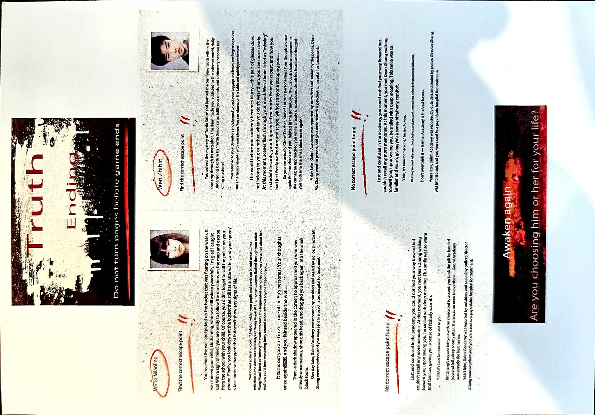
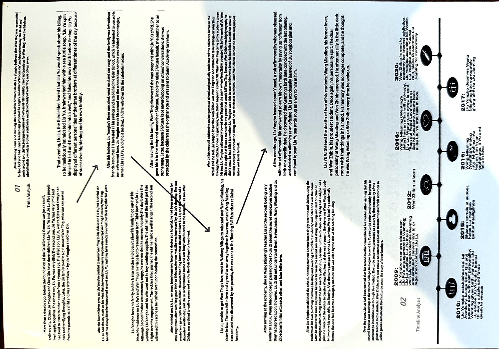
Rakd össze a történetet! Ha mind az öt kérdésre helyesen válaszolsz, feltárul az igazság.
A Gaimi Akadémia teljes története
Az igazság a Következtetés kvíz kitöltésével oldható fel. Ha elakadtál és mindenképp látni akarod a megoldást, használd az alábbi vészmegoldást — de figyelmeztetlek: nincs visszaút.
Ide írd a megfigyeléseidet — a jegyzeteid automatikusan mentődnek ebben a böngészőben.